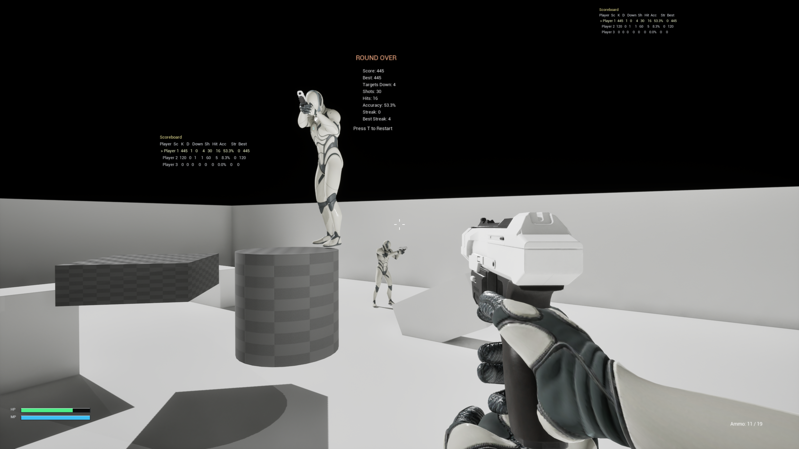

高校生の頃から、ゲーム制作にはずっと手を出してきました。 当時は本当にやりたかったのはFPSだったのですが、いま振り返ると技術的にも時間的にも、あの頃の自分には届かない夢でした。
大学では3DCGやゲーム制作について体系的に学び、卒業してからも創作は続けてきました。 そしてここ数年で、CursorやCodexのようなAIのコーディング支援が実用ラインまで伸びてきたのを見て、大人になって少しだけ自分のお金を創作に回せるようになった今なら、当時頭の中にだけあった「あのFPS」に、もう一度本気で挑戦できるのではないかと思い直しました。
目指しているもの
私が作りたいFPSは、好きなものをぜんぶ詰め込んだ、いわゆる闇鍋のようなゲームです。 アニメ調のかわいいキャラも、かっこいいキャラも、銃や剣、魔法、それに兵器のようなギミックまで持ち込んで、戦場を飛び回ったり爆発したりしながら勝ちを奪い合う、はちゃめちゃな対戦がしたいのです。
ルールや世界観の細部は、また別の記事でゆっくり書いていこうと思います。 いまは「どんな遊びをしたいか」の輪郭を、自分の言葉で置いておくくらいの段階です。
いまの制作体制
エンジンは Unreal Engine 5.7 です。 実装まわりは、CodexやCursorといったAI開発ツールと、Unreal向けのMCPである ChiR24/Unreal_mcp を組み合わせた環境で進めています。 エディタ操作やプロジェクトの文脈をツール側に渡せるので、単発のスクリプト生成よりも「プロジェクトに沿った提案」をもらいやすく、試行錯誤の速度がかなり違うと感じています。
最初の3日でできたこと
ひとまずの目標は、「最低限遊べる土台」を固めることにしました。 移動や射撃といった基本操作に加えて、マルチプレイ用の環境を整え、実際にフレンドと入り込んで動作確認ができるところまで、三日ほどで持っていくことができました。
オンライン検証には、Steam のテスト用アプリIDである AppID 480 を使った、身内向けの遠隔テスト環境を用意しています。 当初は Epic Online Services（EOS）側で本番に近い構成を組もうとしていたのですが、Epic の承認待ちが五十日を超えて動いていないため、いったん Steam 経由での検証に切り替えました。 もし将来リリースまで進められるなら、その段階ではEOSを前提にした構成になるのではないかと考えています。
マルチ検証時の画面
実際にフレンドと入り込んで確認したときの画面です。

ラウンド終了後のオーバーレイと、三人分のスコアボードが並んでいます。 まだグレーボックスとマネキンだらけのプロトタイプですが、「同期して撃てて、結果が残る」まで来れたのは、個人的にかなり大きな一歩でした。